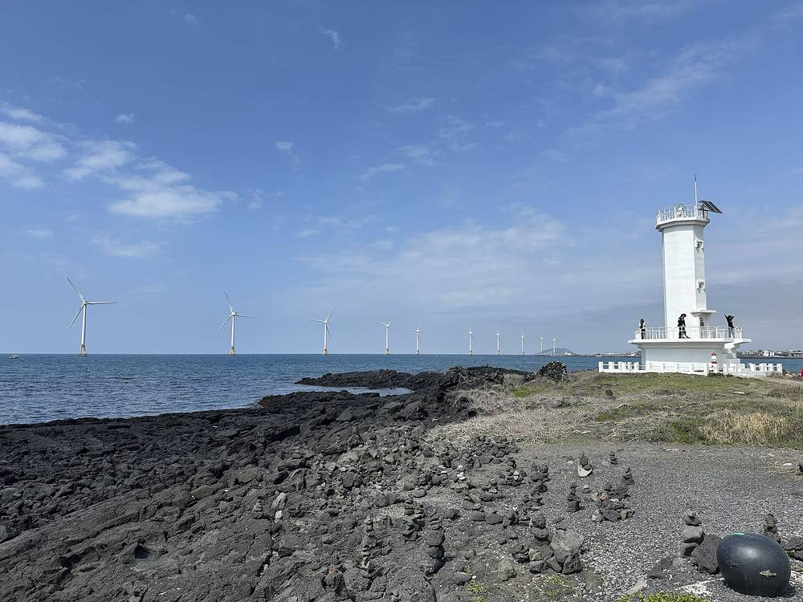

제주에너지공사, 남는 풍력 전기를 수소로…ALK·PEM 수전해와 ESS 묶은 실증 착수

11개 기관 참여 국가 연구개발과제 착수회의…2028년 통합 실증운전, 출력제어 시간대엔 수전해 늘리는 '플러스DR' 모의 참여
제주도 출자 공기업인 제주에너지공사가 재생에너지 발전량이 출렁일 때 남는 전기를 수소로 바꿔 저장하는 하이브리드 수전해 실증에 들어갔다. 공사는 지난 6일 서울에서 「재생에너지-그리드 변동 대응 수전해 시스템 기술개발」 국가 연구개발과제의 1차년도 착수회의를 열었고, 현대자동차·한국전력거래소·제주대학교 등 11개 기관 관계자 40여 명이 참석했다. 과제는 기존 알칼라인(ALK) 수전해 설비에 고분자전해질막(PEM) 수전해와 에너지저장장치(ESS)를 붙여 2028년부터 세 설비를 함께 돌리는 실증을 목표로 한다. 봄·가을처럼 재생에너지가 수요보다 많은 시간에는 수전해 가동을 늘리는 '플러스DR'에 모의 참여하고, 수요가 몰릴 때는 수전해 부하를 최저로 낮추는 방식이 논의됐다. 전력거래소는 제주 실시간·예비력시장에서 수전해를 유연성 자원으로 쓰기 위한 성능기준을 검토하고, 생산 수소의 청정수소 인증 가능성도 전과정평가로 따져 보기로 했다. 공사는 상업운전 중인 플랜트 가동 중단을 최소화하며 단계별로 설비를 갖춰 제주형 수전해 운영모델을 만들겠다는 계획이다.
시민에너지 관점
제주는 풍력·태양광이 넘치는 봄·가을마다 출력제어로 발전기를 멈춰 세우는 곳이고, 독일은 이렇게 버려지던 전기를 지역 열·수소로 돌리는 '멈추기보다 쓰기' 원칙을 제도로 키워 왔다. 수전해가 비싸고 효율이 낮다는 지적은 맞지만, 멈춰 버리는 전기를 원가 삼으면 계산은 달라진다. 중요한 것은 이 설비가 공기업 손에 있다는 점으로, 남는 전기로 번 수익과 줄어든 출력제어 손실이 도민과 주민 발전소에 돌아가도록 설계해야 한다. 제주도와 공사는 실증 단계부터 주민 협동조합 발전소의 잉여 전력을 받아 주는 규칙을 함께 만들어야 한다.
출처: 뉴스N제주 2026-11-14 현달환 원문 보기
済州エネルギー公社、余った風力の電気を水素に…ALK・PEM水電解とESSを組み合わせた実証に着手
11機関が参加する国家研究開発課題のキックオフ会議…2028年に統合実証運転、出力制御の時間帯は水電解を増やす「プラスDR」に模擬参加
済州道が出資する公企業の済州エネルギー公社が、再生可能エネルギーの発電量が揺れ動くときに余った電気を水素に変えて貯めるハイブリッド水電解の実証に入った。公社は6日、ソウルで国家研究開発課題「再エネ・グリッド変動対応水電解システム技術開発」の1年目キックオフ会議を開き、現代自動車、韓国電力取引所、済州大学など11機関の関係者約40人が出席した。課題は既存のアルカリ（ALK）水電解設備に固体高分子膜（PEM）水電解とエネルギー貯蔵装置（ESS）を加え、2028年から3つの設備を一体で動かす実証を目指す。春や秋のように再エネが需要を上回る時間帯には水電解の稼働を増やす「プラスDR」に模擬参加し、需要が集中するときは水電解の負荷を最低まで下げる運転が議論された。電力取引所は済州のリアルタイム・予備力市場で水電解を柔軟性資源として使うための性能基準を検討し、生産水素のクリーン水素認証の可能性もライフサイクル評価で調べることにした。公社は商業運転中のプラントの停止を最小限に抑えながら段階的に設備を整え、済州型の水電解運営モデルをつくる計画だ。
市民エネルギーの視点
済州は風力・太陽光があふれる春と秋のたびに出力制御で発電機を止めている地域で、ドイツはこうして捨てられていた電気を地域の熱や水素に回す「止めるより使う」原則を制度として育ててきた。水電解は高価で効率が低いという指摘はもっともだが、止めて捨てる電気を原価とすれば計算は変わる。重要なのはこの設備が公企業の手にあることで、余剰電力で得た収益と減った出力制御の損失が道民と住民の発電所に戻るよう設計すべきだ。済州道と公社は実証段階から、住民協同組合の発電所の余剰電力を受け入れるルールを一緒につくる必要がある。
出典: 뉴스N제주 2026-11-14 현달환 原文を読む
济州能源公社把多余风电变成氢气…启动ALK、PEM电解与储能结合的示范项目
11家机构参与的国家研发课题启动会召开：2028年整合示范运行，弃电时段增加电解负荷的“正向需求响应”模拟参与
济州道出资的公营企业济州能源公社启动混合电解制氢示范，在可再生能源发电量波动时把多余电力转为氢气储存。公社6日在首尔召开国家研发课题“应对可再生能源与电网波动的电解系统技术开发”第一年度启动会，现代汽车、韩国电力交易所、济州大学等11家机构约40人出席。课题计划在现有碱性（ALK）电解设备基础上加装质子交换膜（PEM）电解和储能系统（ESS），从2028年起开展三种设备的整合示范运行。会上讨论了在春秋季可再生能源超过需求的时段加大电解负荷、模拟参与“正向需求响应”，而在用电高峰时把电解负荷降到最低的运行方式。电力交易所将研究把电解设备作为济州实时市场和备用市场灵活性资源的性能标准，并通过全生命周期评价研究所产氢气获得清洁氢认证的可能性。公社计划在尽量减少商业运行工厂停机的前提下分阶段建设设备，打造济州型电解运营模式。
市民能源视角
济州每到风电、光伏过剩的春秋季就要靠弃电让机组停转，德国则通过制度推动“与其弃电不如利用”，把这些电转为当地热能和氢能。电解制氢昂贵、效率低的批评有道理，但如果以本会被丢弃的电作为成本，账就不一样了。关键在于这套设施掌握在公营企业手中，应当设计成让利用余电获得的收益和减少的弃电损失回到道民和居民电站。济州道和公社应从示范阶段起，共同制定接纳居民合作社电站余电的规则。
来源: 뉴스N제주 2026-11-14 현달환 查看原文
Jeju Energy Corporation starts pilot turning surplus wind power into hydrogen with ALK and PEM electrolysers plus storage
Kick-off for national R&D project with 11 partners; integrated trial operation from 2028 and simulated 'plus DR' to absorb power during curtailment hours
Jeju Energy Corporation, a public company owned by Jeju Province, has begun a hybrid electrolysis pilot that converts surplus electricity into stored hydrogen when renewable output swings. The corporation held the first-year kick-off meeting of a national R&D project on electrolysis systems that respond to renewable and grid fluctuations in Seoul on the 6th, attended by about 40 people from 11 organisations including Hyundai Motor, Korea Power Exchange and Jeju National University. The project adds proton exchange membrane (PEM) electrolysis and an energy storage system (ESS) to an existing alkaline (ALK) electrolyser, aiming to run all three together from 2028. Participants discussed simulated participation in "plus DR", raising electrolyser output when renewables exceed demand in spring and autumn, and cutting the load to a minimum when demand peaks. Korea Power Exchange will review performance standards for using electrolysers as flexibility resources in Jeju's real-time and reserve markets, and the partners will assess through life-cycle analysis whether the hydrogen can be certified as clean. The corporation plans to build the equipment in stages while minimising downtime at the commercially operating plant, creating a Jeju model for electrolysis operation.
Citizen Energy View
Jeju curtails wind and solar every spring and autumn when output overflows, while Germany has built policy around using such electricity for local heat and hydrogen rather than switching plants off. Electrolysis is expensive and inefficient, critics rightly say, but the maths changes when the input is power that would otherwise be thrown away. What matters is that this facility is in public hands, so revenue from surplus power and reduced curtailment losses should flow back to residents and community-owned plants. Jeju Province and the corporation should write rules from the pilot stage that let residents' cooperative plants sell their surplus into it.
Source: 뉴스N제주 2026-11-14 현달환 Read the original